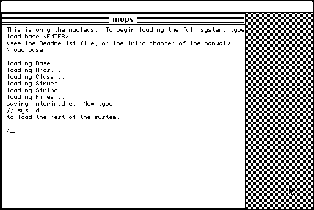

Download
Mops404.zip (1.6M) Mops 4.0.4 repackaged into a zipped hfs disk image and checksum file. The disk image can be mounted with Mini vMac.
Mops404.sit.bin (1.4M) Mops 4.0.4 in the original format.MopsManual400PDF.zip (725K) Mops 4.0 Manual repackaged into a zipped hfs disk image and checksum file. The disk image can be mounted with Mini vMac.
MopsManual400PDF.sit.bin (750K) Mops 4.0 Manual in the original format.MopsManual400Word.zip (471K) Mops 4.0 Manual repackaged into a zipped hfs disk image and checksum file. The disk image can be mounted with Mini vMac.
MopsManual400Word.sit.bin (389K) Mops 4.0 Manual in the original format.
copyright: Michael Hore
mod date: Feb 10, 2001
license: public domain
from url :
PowerMops
"It's a close cousin to Yerk, which is a more 'conservative' development of Neon, basically aimed at keeping up with later Macs and systems while remaining fully compatible with Neon. Mops is more "radical". It's a complete reimplementation which compiles native (68k and PowerPC) code instead of the usual Forth threaded variety."

If you find these downloads useful, please consider helping the Gryphel Project, which hosts them.
Here are the md5 checksums for the downloads, signed with Gryphel Key 5:
--------- GRY SIGNED TEXT --------- 344a6a51c533a8c1bbee95848e5a96ee Mops404.zip 54d6adb49067ebbc9c26acc3dfb3f45d Mops404.sit.bin 6226aedf5ba4f8e045151ba00641076f MopsManual400PDF.zip 613f1b5f6b4b31b4747a4b9f2ffc78ed MopsManual400PDF.sit.bin d90d7dc4001d39fe4574e1682addee3c MopsManual400Word.zip f7c5585e820f6defb8ce8aceb9ee70af MopsManual400Word.sit.bin ------- BEGIN GRY SIGNATURE ------- Gry/4Xa8CFcUzxdN/H49aKalUCCfJD3IuiYd29A74YM4C1jF1CefiQZdtZ1Ur0HI faSWsf5l0yGI+rYxBtnYmAYOoZEaEpqpMTbpXoi1uIzsB98qY3SPAEFIs0HJNK5E lFD1JFoFmHbq4Tt8GChe5NZKp+klZC8s2Ygr/GQm5IJ2xTMXTbD+C4GzvCfXMDnu -------- END GRY SIGNATURE --------